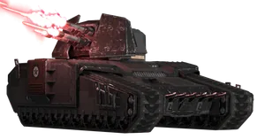
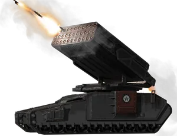
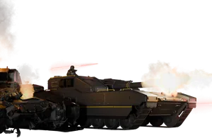
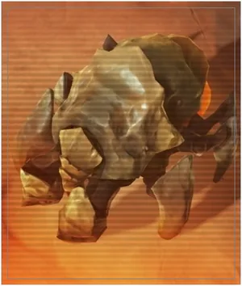
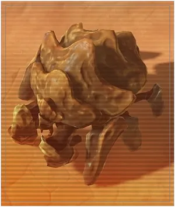
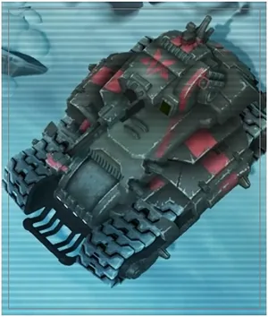
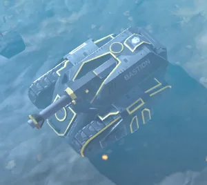
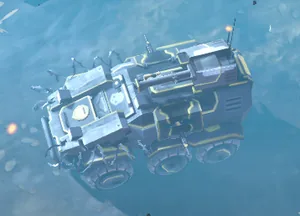
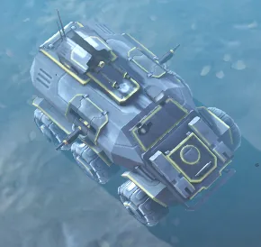

Tank (disambiguation)
| This disambiguation page lists articles associated with the same 标题. If an internal link referred you here, you may wish to change the link to point directly to the intended 条款. |
Tank (disambiguation)
Annihilator Tank
Shredder Tank
Barrager Tank
TD-220 Bastion
Bug Tank
Bug Behemoth
Infantry Fighting 载具
TD-110 Bastion
M5-32 HAV
M5 APC









基本信息 信息
描述
Heavily 有护甲 units
绝地潜兵2
In 绝地潜兵 2, tanks are heavily 有护甲 units capable of shrugging off 轻型 武器库.
- Annihilator Tank:
 机器人 tank with a 重型 cannon.
机器人 tank with a 重型 cannon. - Shredder Tank: 机器人 tank with quad barrel repeaters.
- Barrager Tank: 机器人 tank with a 导弹 pod.
- TD-220 Bastion MK XVI:
 超级地球 tank 驱逐舰 with a 120mm main cannon.
超级地球 tank 驱逐舰 with a 120mm main cannon.